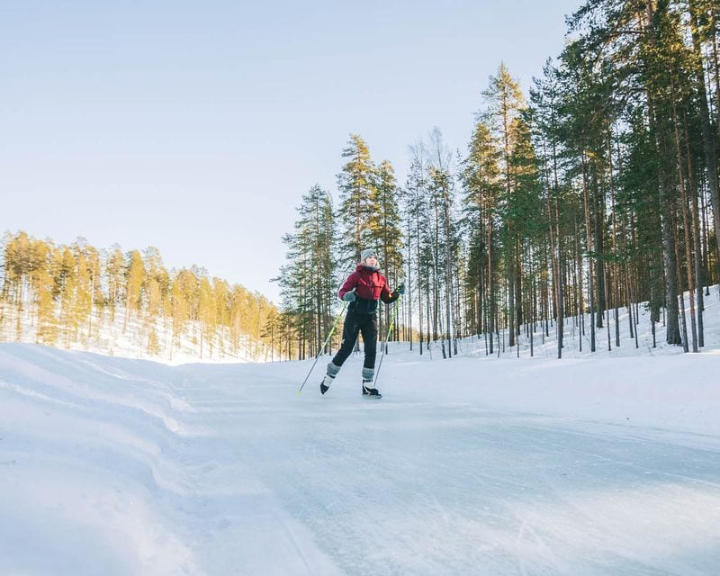
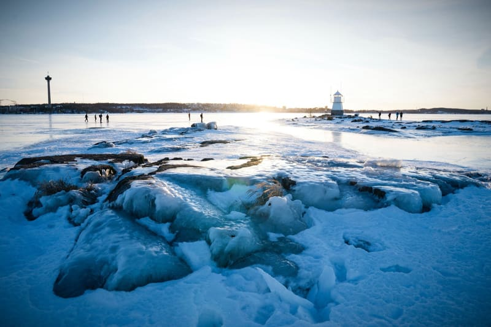
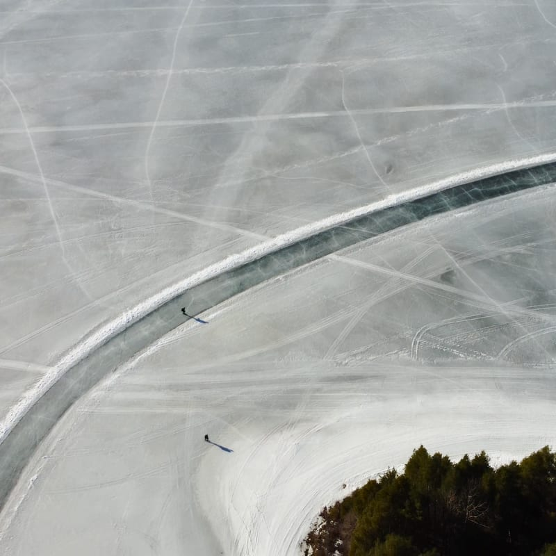
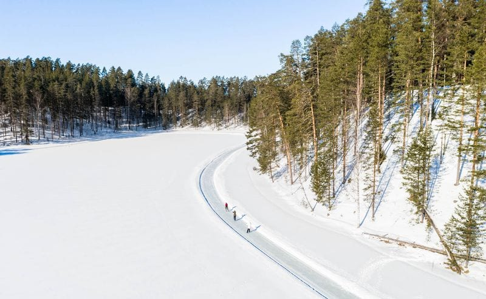
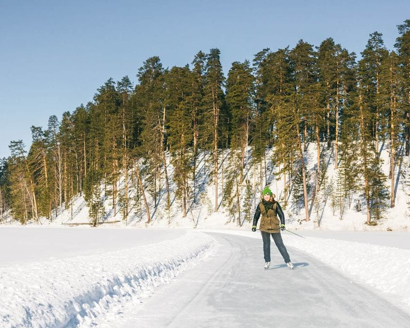
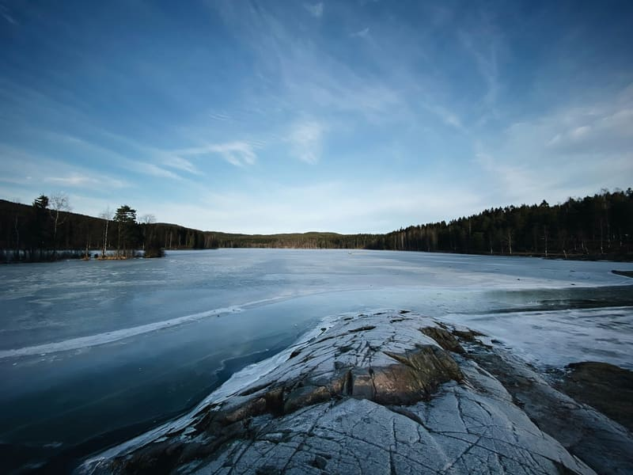
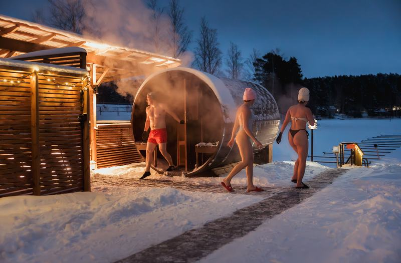
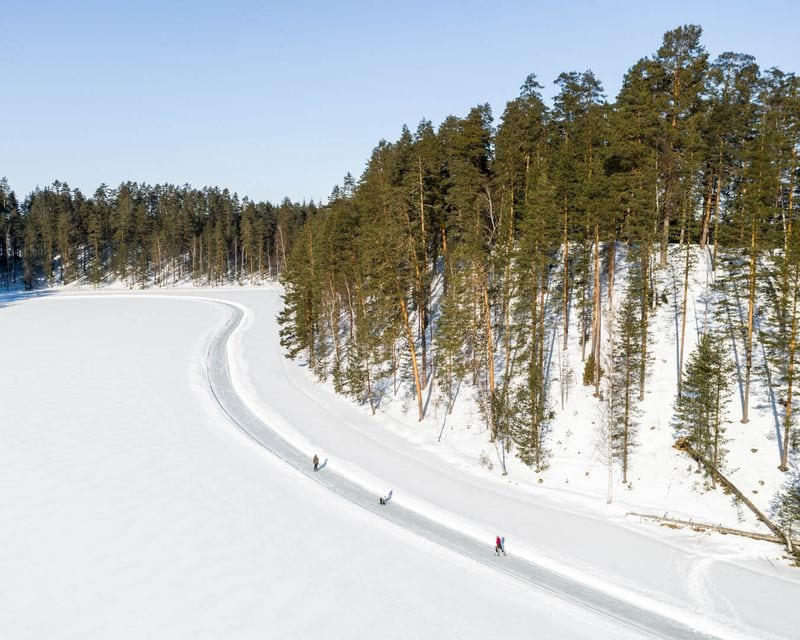
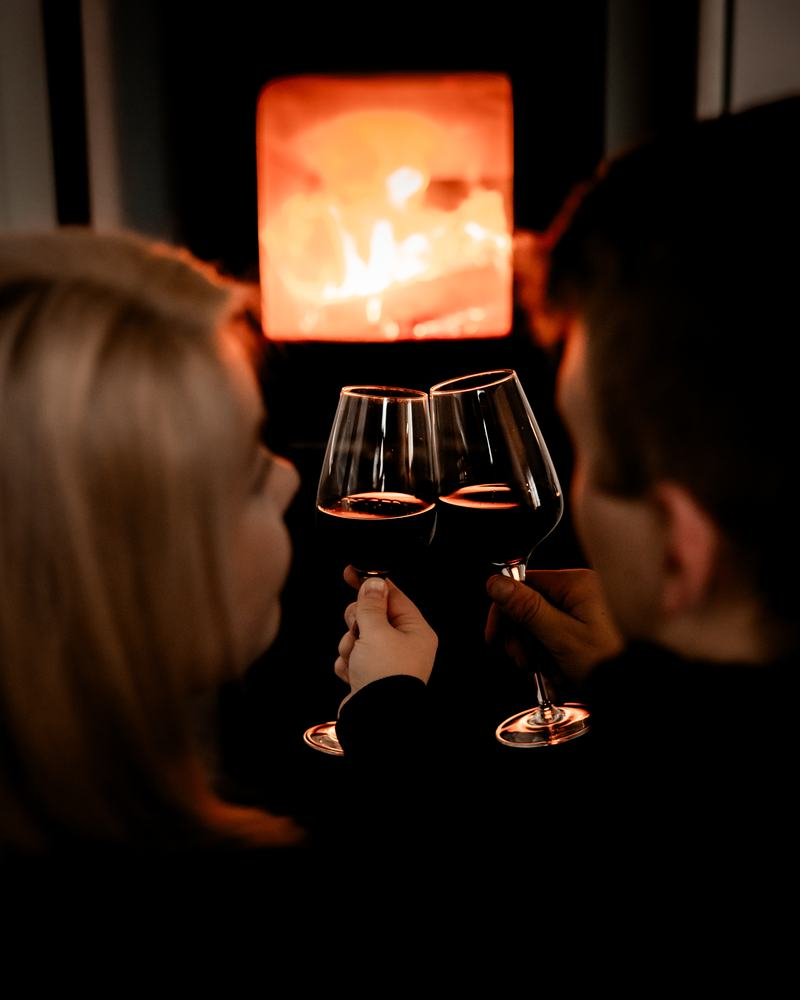
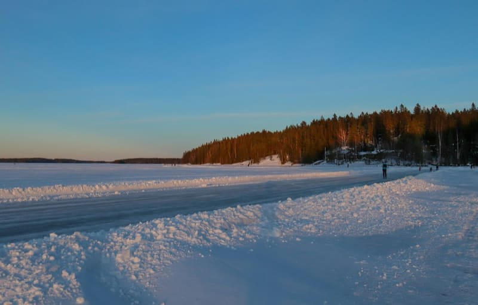
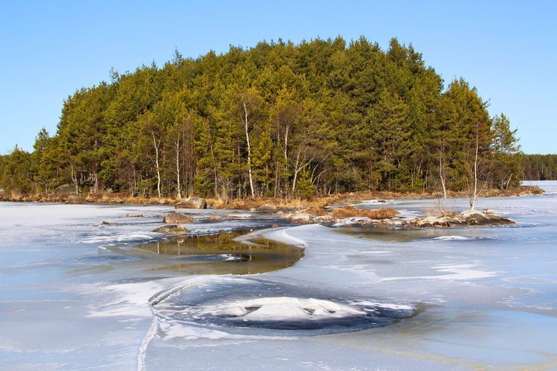
Where you skate
Finland's largest lake district, and you decide for yourself when to get on the ice.
Punkaharju lies in the middle of Lake Saimaa, the vast lake district in south-eastern Finland. Forest, islands and ice as far as you can see.
On this trip there's no guide along. You get the accommodation and the location, and you plan your own days from there. No fixed departure date, no group to join.
That does ask something of you: you need to be able to judge for yourself whether the ice is safe. If you're unsure about that, feel free to ask Joey beforehand.